kolzur_filter module¶
Version : 2017-03-31
Summary¶
Functions¶
_kz_coeffs(m, k) |
Calculate coefficients of the Kolmogorov–Zurbenko filter |
_kz_prod(data, coef, m, k[, t]) |
|
_kz_sum(data, coef) |
|
kz_filter(data, m, k) |
Kolmogorov-Zurbenko fitler |
kzft(data, nu, m, k[, t, dt]) |
Kolmogorov-Zurbenko Fourier transform filter |
kzp(data, nu, m, k[, dt]) |
Kolmogorov-Zurbenko periodogram |
sliding_window(arr, window) |
Apply a sliding window on a numpy array. |
Introduction¶
Numpy implementation of the Kolmogorov-Zurbenko filter
https://en.wikipedia.org/wiki/Kolmogorov%E2%80%93Zurbenko_filter
Todo
Implement the KZ adaptive filter.
Functions¶
-
_kz_coeffs(m, k)[source]¶ Calculate coefficients of the Kolmogorov–Zurbenko filter
Returns: A numpy.ndarrayof size k*(m-1)+1This functions returns the normlalised coefficients 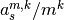.
Coefficients definition
A definition of the Kolmogorov–Zurbenko filter coefficients is provided in this article. Coefficients 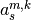 are the coefficients of the polynomial function:
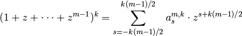
The coefficients are calculated by iterating over
 .
.Calculation example for m=5 and k=3
Let us define the polynomial function
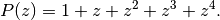
At 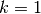, the coefficients 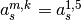 are that of 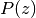,
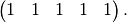
At 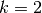, we want to calculate the coefficients of polynomial function 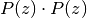, of degree 8. First, we calculate the polynomial functions , 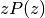, 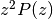 and 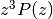 and then sum them.
Let us represent the coefficients of these functions in a table, with monomial elements in columns:

At 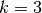, we want to calculate the coefficients of polynomial function 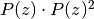, of degree 12. We use the same representation:
![\begin{array}{r|ccccccccccccc}
& z^0 & z^1 & z^2 & z^3 & z^4 & z^5 & z^6 & z^7 & z^8 & z^9 & z^{10} & z^{11} & z^{12} \\
\hline
P(z)^2 & 1 & 2 & 3 & 4 & 5 & 4 & 3 & 2 & 1 & 0 & 0 & 0 & 0 \\
zP(z)^2 & 0 & 1 & 2 & 3 & 4 & 5 & 4 & 3 & 2 & 1 & 0 & 0 & 0 \\
z^2P(z)^2 & 0 & 0 & 1 & 2 & 3 & 4 & 5 & 4 & 3 & 2 & 1 & 0 & 0 \\
z^3P(z)^2 & 0 & 0 & 0 & 1 & 2 & 3 & 4 & 5 & 4 & 3 & 2 & 1 & 0 \\
z^4P(z)^2 & 0 & 0 & 0 & 0 & 1 & 2 & 3 & 4 & 5 & 4 & 3 & 2 & 1 \\
\hline
\mathrm{Sum} & 1 & 3 & 6 & 10 & 15 & 18 & 19 & 18 & 15 & 10 & 6 & 3 & 1
\end{array}](_images/math/f2d7dea810670fefcc7d74fd7b020bc0e78d0328.png)
>>> c = _kz_coeffs(3, 1) >>> print(c) [ 0.33333333 0.33333333 0.33333333] >>> c = _kz_coeffs(3, 2) >>> print(c*3**2) [ 1. 2. 3. 2. 1.] >>> c = _kz_coeffs(5, 3) >>> print(c*5**3) [ 1. 3. 6. 10. 15. 18. 19. 18. 15. 10. 6. 3. 1.]
-
kz_filter(data, m, k)[source]¶ Kolmogorov-Zurbenko fitler
Parameters: - data (numpy.ndarray) – A 1-dimensional numpy array of size N. Any missing value should be set to
np.nan. - m (int) – Filter window width.
- k (int) – Filter degree.
Returns: A
numpy.ndarrayof size N-k*(m-1)Given a time series 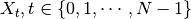, the Kolmogorov-Zurbenko fitler is defined for 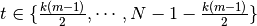 by
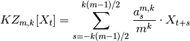
Definition of coefficients is given in
_kz_coeffs().- data (numpy.ndarray) – A 1-dimensional numpy array of size N. Any missing value should be set to
-
kzft(data, nu, m, k, t=None, dt=1.0)[source]¶ Kolmogorov-Zurbenko Fourier transform filter
Parameters: - data (numpy.ndarray) – A 1-dimensional numpy array of size N. Any missing value should be set to
np.nan. - nu (list-like) – Frequencies, length Nnu.
- m (int) – Filter window width.
- k (int) – Filter degree.
- t (list-like) – Calculation indices, of length Nt. If provided, KZFT filter will be calculated only for values
data[t]. Note that the KZFT filter can only be calculated for indices in the range [k(m-1)/2, (N-1)-k(m-1)/2]. Trying to calculate the KZFT out of this range will raise an IndexError. None, calculation will happen over the whole calculable range. - dt (float) – Time step, if not 1.
Returns: A
numpy.ndarrayof shape (Nnu, Nt) or (Nnu, N-k(m-1)) if t is None.Raises: IndexError – If t contains one or more indices out of the calculation range. See documentation of keyword argument t.
Given a time series , the Kolmogorov-Zurbenko Fourier transform filter is defined for by
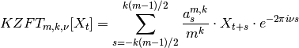
- data (numpy.ndarray) – A 1-dimensional numpy array of size N. Any missing value should be set to
-
kzp(data, nu, m, k, dt=1.0)[source]¶ Kolmogorov-Zurbenko periodogram
Parameters: - data (numpy.ndarray) – A 1-dimensional numpy array of size N. Any missing value should be set to
np.nan. - nu (list-like) – Frequencies, length Nnu.
- m (int) – Filter window width.
- k (int) – Filter degree.
- dt (float) – Time step, if not 1.
Returns: A
numpy.ndarrayos size Nnu.Given a time series , the Kolmogorov-Zurbenko periodogram is defined by
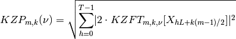
where 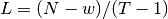 is the distance between the beginnings of two successive intervals,
 being the
calculation window width of the
being the
calculation window width of the kzft()and the number of intervals.
the number of intervals.The assumption was made that 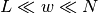, implying that the intervals overlap.
- data (numpy.ndarray) – A 1-dimensional numpy array of size N. Any missing value should be set to
-
sliding_window(arr, window)[source]¶ Apply a sliding window on a numpy array.
Parameters: - arr (numpy.ndarray) – An array of shape (n1, ..., nN)
- window (int) – Window size.
Returns: A
numpy.ndarrayof shape (n1, ..., nN-window+1, window).See also
Usage (1D):
>>> arr = np.arange(10) >>> arrs = sliding_window(arr, 5) >>> arrs.shape (6, 5) >>> print(arrs[0]) [0 1 2 3 4] >>> print(arrs[1]) [1 2 3 4 5]
Usage (2D):
>>> arr = np.arange(20).reshape(2, 10) >>> arrs = sliding_window(arr, 5) >>> arrs.shape (2, 6, 5) >>> print(arrs[0, 0]) [0 1 2 3 4] >>> print(arrs[0, 1]) [1 2 3 4 5]